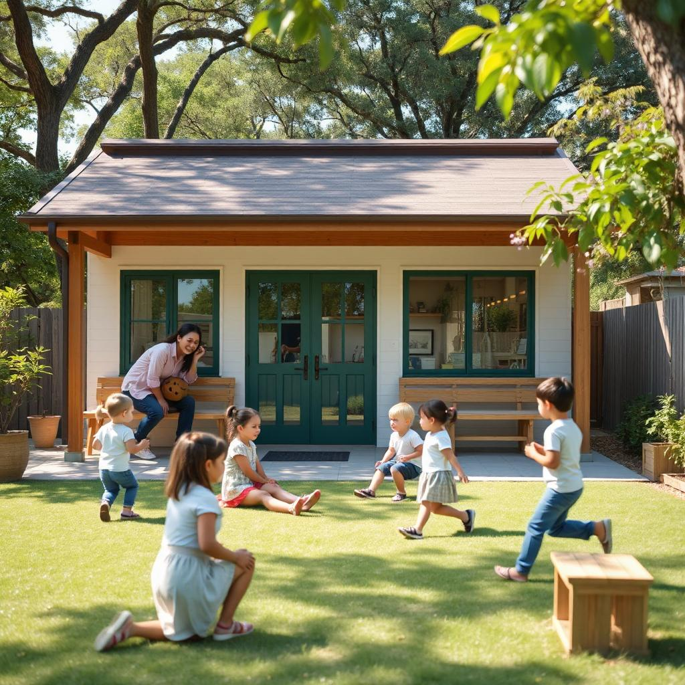
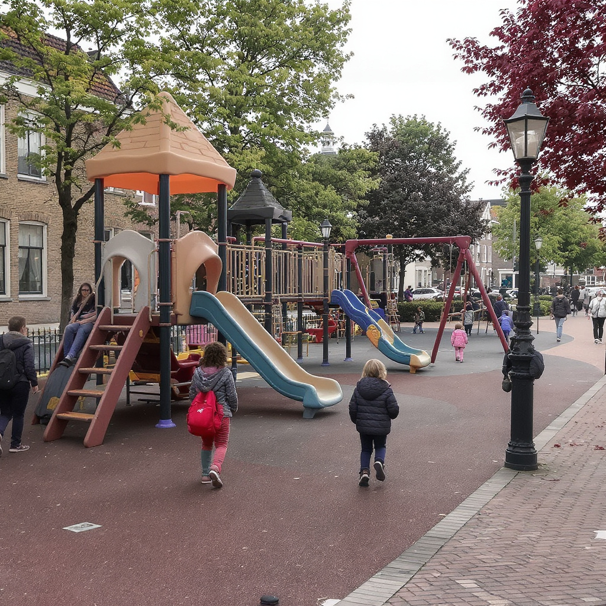

Explore detailed profiles of our featured daycare centers, including photos and parent reviews.
Happy Tots Daycare
Outdoor fun at Happy Tots Daycare
Happy Tots offers a vibrant outdoor environment with STEM-focused activities for children aged 2-5. Located in Cityville, it emphasizes learning through play.
Parent Reviews
"My child loves the outdoor adventures here! The staff is amazing." - Sarah M.
"Great facilities and educational programs. Highly recommend!" - John D.
"A safe and fun place for kids to grow." - Emily R.
Little Learners Center

Playtime at Little Learners Center
Little Learners focuses on art and small group activities for ages 1-4. Situated in Createtown, it provides a nurturing space for early development.
Parent Reviews
"The art classes spark my kid's creativity every day!" - Lisa K.
"Warm and caring environment with excellent teachers." - Michael T.
"Perfect for building social skills in small groups." - Anna P.
Sunshine Kids Daycare

Adventure playground at Sunshine Kids Daycare
Sunshine Kids features music lessons and extended hours for children 6 months to 5 years. Based in Playburg, it promotes joyful learning and exploration.
Parent Reviews
"The music program is fantastic and the hours are so convenient!" - David S.
"My toddler thrives in this energetic setting." - Rachel L.
"Top-notch care with fun activities all day long." - Tom B.